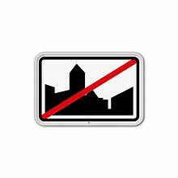
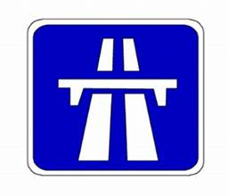

Route pour automobile (pas de vitesse minimum)

En agglomération
Hors agglomération
Autoroute
Bruxelles (capitale)
Flandre (Région flamande)
Wallonie (Région wallonne)
Dans cet tableau, vous trouverez les limitations de vitesses en fonction des différentes régions de Belgique. Les vitesses sont spécifiées pour les routes pour automobiles, en agglomération, hors agglomération et sur autoroute. Respecter ces limitations est crucial pour assurer la sécurité de tous les usagers de la route.
|
Route pour automobile (pas de vitesse minimum) |
En agglomération |

Hors agglomération |

Autoroute |
|---|---|---|---|
|
Bruxelles (capitale) |
30 km/h | 70 km/h | 120 km/h |
|
Flandre (Région flamande) |
50 km/h | 70 km/h | 120 km/h |
|
Wallonie (Région wallonne) |
50 km/h | 90 km/h | 120 km/h |